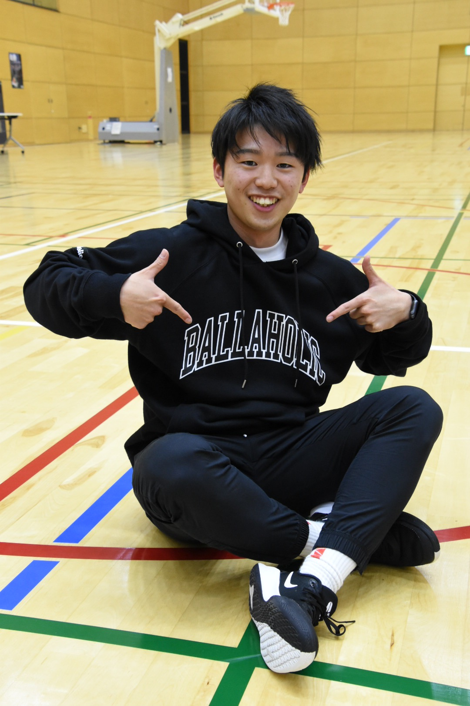
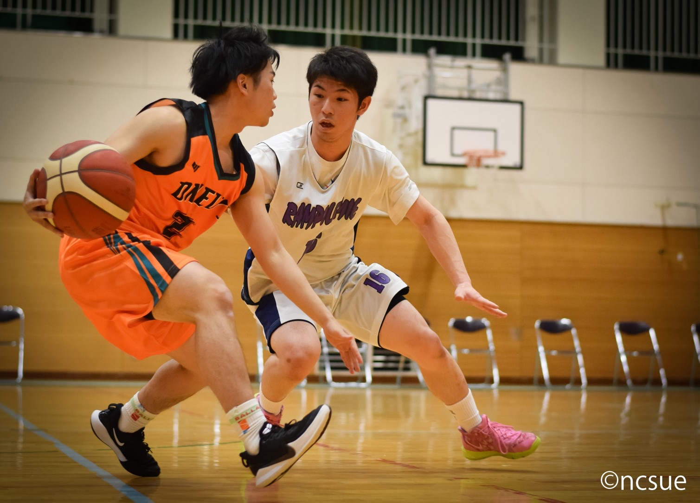
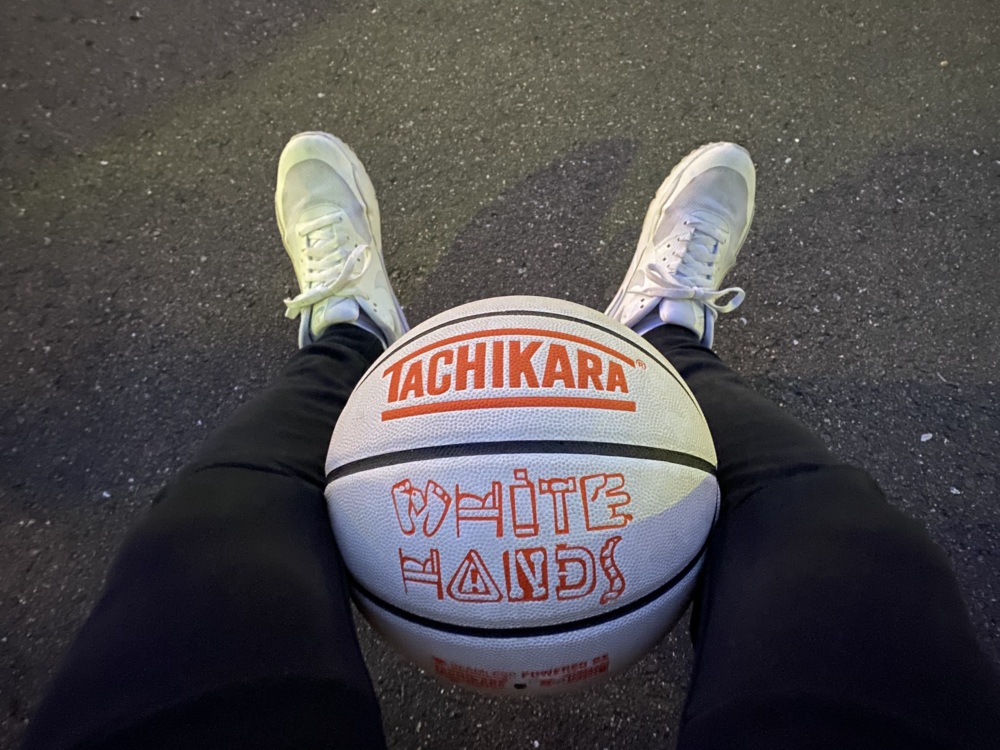
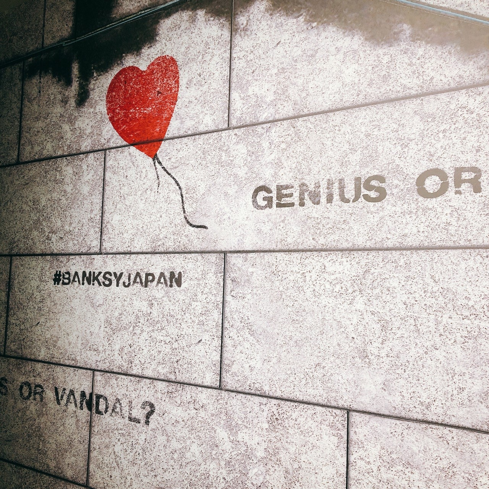

<!doctype html>
<html lang="ja">
    <head>
    <meta charset="UTF-8">
    <meta name="viewport" content="width=device-width,initial-scale=1">        <title>About ｜Yoshiaki Portfolio</title>
    <meta name="description" content="初心者からデザイナーを目指すYoshiakiのポートフォリオ">
    <link rel="stylesheet" href="reset.css">
    <link rel="stylesheet" href="style.css">
    <link href="https://fonts.googleapis.com/css?family=Unna&display=swap" rel="stylesheet">
    <link rel="stylesheet" href="https://use.fontawesome.com/releases/v5.6.3/css/all.css" integrity="sha384-UHRtZLI+pbxtHCWp1t77Bi1L4ZtiqrqD80Kn4Z8NTSRyMA2Fd33n5dQ8lWUE00s/" crossorigin="anonymous">

    <!-- OGP設定 -->
    <meta property="og:type" content="website">
    <meta property="og:title" content="初心者からデザイナーを目指すYoshiakiのポートフォリオ">
    <meta property="og:site_name" content="Yoshiuaki｜Portfolio">
    <meta property="og:description" content="初心者からWebデザイナーになることを目指して活動しています。よろしくお願いします。">

    <!-- Twitter設定 -->
    <meta name="twitter:card" content="summary">
    <meta name="twitter:site" content="@24Yoshiaki">
    <meta name="twitter:player" content="@24Yoshiaki">

    <!-- スムーススクロール -->
    <script type="text/javascript" src="https://ajax.googleapis.com/ajax/libs/jquery/3.1.0/jquery.min.js"></script>

    <!-- Global site tag (gtag.js) - Google Analytics -->
    <script async src="https://www.googletagmanager.com/gtag/js?id=UA-129306569-3"></script>
    <script>
    window.dataLayer = window.dataLayer || [];
    function gtag(){dataLayer.push(arguments);}
    gtag('js', new Date());

    gtag('config', 'UA-129306569-3');
    </script>

    </head>
    <!-- ここまでhead -->
    <!-- ここからbody -->

    <body>
    <div class="container">
    <!-- ここからheader -->
    <header id="header" class="header">
        <nav id="gnav">
            <div class="nav-box">
                <h1 class="logo">
                    <a><span class="text-small">Yoshi’s</span>
                    <br>portfolio</a>
                </h1>
                <ul class="pc-menu">
                  <li class="pc-nav"><a href="index.html">Top</a></li>
                    <li class="pc-nav"><a href="about-index.html">About</a></li>
                    <li class="pc-nav"><a href="works.html">Works</a></li>
                    <li class="pc-nav"><a href="https://y-book-record.hateblo.jp/archive" target="blank">Blog<i class="fas fa-external-link-alt"></i></a></li>
                    <li class="pc-nav"><a href="contact.index.html" target="blank">Contact<i class="fas fa-external-link-alt"></i></a></li>
                </ul>
            </div>
        </nav>

    <!-- ハンバーガーメニュー -->
        <nav class="global-nav">
            <ul class="global-nav__list">
                <li class="global-nav__item"><a href="index.html">Top</a></li>
                <li class="global-nav__item"><a href="about-index.html">About</a></li>
                <li class="global-nav__item"><a href="works.html">Works</a></li>
                <li class="global-nav__item"><a href="https://y-book-record.hateblo.jp/archive/" target="blank">Blog<i class="fas fa-external-link-alt"></i></a></li>
                <li class="global-nav__item"><a href="contact.indfex.html" target="blank">Contact<i class="fas fa-external-link-alt"></i></a></li>
            </ul>
            <div class="global-nav__item-sns">
                    <a class="sns-icon" href="https://twitter.com/24Yoshiaki" target="blank"><i class="fab fa-twitter"></i></a>
                    <a class="sns-icon" href="https://www.instagram.com/yoshiaki.31/" target="blank"><i class="fab fa-instagram"></i></a>
            </div>
        </nav>
        <div class="hamburger" id="js-hamburger">
            <span class="hamburger__line hamburger__line--1"></span>
            <span class="hamburger__line hamburger__line--2"></span>
            <span class="hamburger__line hamburger__line--3"></span>
        </div>
        <div class="black-bg" id="js-black-bg"></div>

        <!-- ハンバーガーメニュー終わり -->

    </header>

    <!-- ここまでheader -->
    <!-- ここからsnsNav -->

    <div class="snsNav">
            <a class="sns-icon" href="https://twitter.com/24Yoshiaki" target="blank"><i class="fab fa-twitter"></i></a>
            <a class="sns-icon" href="https://www.instagram.com/yoshiaki.31/" target="blank"><i class="fab fa-instagram"></i></a>
        </div>
    </div>

    <!-- ここまでsnsNav -->
    <!-- ここからaboutHead -->

    <section id="profile">
        <div class="wrapper">
            <h2 class="title">About</h2>
            <p class="title-sub">私について</p>

        <div class="profile-flexAll">
        <div class="profile">
            <p class="paragraph">岡山県出身の23歳。<br>放課後等デイサービスにて運動療育の児童指導員として勤務しています。体を動かすことや教えることが好きで、好きなことを生かしながら人と関わる仕事がしたいと考えていました。</p>
            <p class="paragraph">2021年から独学でデザインの勉強を始め、放課後等デイサービスの仕事をしながらフリーランスのデザイナーを目指しています。</p>
            <p class="paragraph">現在はWebデザインを中心に行い、独学でどこまでできるか挑戦しています。</p>
            <p class="paragraph">どんな時でも誠実でいること、素直でいることを意識しています。色んなことにチャレンジしてたくさんの経験を吸収してビッグになる！！</p>
        </div>
        <div class="profile-image">
                <div class="profile-image-s"></div>
                <div class="profile-image-l"></div>
            </div>
        </div>
    </div>
    </section>

    <!-- ここまでaboutHead -->
    <!-- ここからfavorite -->
       <section id="favorite">
           <div class="wrapper">

               <h3>Favorite</h3><p class="title-sub-page">好きなこと</p>

                   <div class="favorite-flexAll">
                       <div class="favorite-flex-inner">
                           
                           <h4 class="favorite-title">Basketball</h4>
                           <p class="favorite-text">小学１年生から今までしています。19年目突入！</p>
                       </div>
                       <div class="favorite-flex-inner">
                           
                           <h4 class="favorite-title">Training</h4>
                           <p class="favorite-text">大学時代からの習慣になっています。デカくなる！！</p>
                       </div>
                       <div class="favorite-flex-inner">
                           
                           <h4 class="favorite-title">Art</h4>
                           <p class="favorite-text">社会人になってから美術館へ行くことも増えました。建築物にも興味があります。</p>
                       </div>
                       <div class="favorite-flex-inner">
                           
                           <h4 class="favorite-title">Movie</h4>
                           <p class="favorite-text">主に邦画ですが、映画を見ることも好きです。</p>
                       </div>
                       <div class="favorite-flex-inner">
                           
                           <h4 class="favorite-title">Book</h4>
                           <p class="favorite-text">毎日読んでいます。今年の目標は100冊読むこと。</p>
                       </div>
           </div>
       </section>
    <!-- ここまでfavorite -->
    <!-- ここからCareer -->

    <section id="career">
        <div class="wrapper">
            <div class="h3-title">
            <h3>Career</h3><p class="title-sub-page">今までのこと</p>
            </div>
            <dl class="career-flex">
                <dt class="career-flexInner-left">2013年</dt>
                <dd class="career-flexInner-right"><span class="career-bold">スポーツ推薦で岡山県の私学高校入学</span><br>
                    ありがたいことに推薦をもらうことができたので３年間思いっきりバスケをしました。最高結果は目標に届かなかったけれどここでの３年間は密度が濃かったです。
                </dd>
            </dl>
            <dl class="career-flex">
                <dt class="career-flexInner-left">2016年</dt>
                <dd class="career-flexInner-right"><span class="career-bold">岡山県の私学高校卒業、兵庫県の4年制大学に入学</span><br>
                  保健体育の教員を目指し、バスケと勉強の日々を過ごす。大学での４年間は素晴らしい出会いに恵まれました。
                </dd>
            </dl>
            <dl class="career-flex">
                <dt class="career-flexInner-left">2020年</dt>
                <dd class="career-flexInner-right"><span class="career-bold">中高保健体育教員免許を取得</span><br>
                    このほかにもJATI-ATI、障害者スポーツ指導員、レクリエーションインストラクター、日本体育協会公認スポーツリーダーの資格を取得し卒業。
                </dd>
            </dl>
            <dl class="career-flex">
                <dt class="career-flexInner-left">2020年</dt>
                <dd class="career-flexInner-right"><span class="career-bold">放課後等デイサービスにて働く</span><br>
                    夢だった教員とは少し違うが、大阪に出てきて発達障害のある子どもたちと関わりながら日々お互いの成長を感じられています。
                </dd>
            </dl>
            <dl class="career-flex">
                <dt class="career-flexInner-left">Now!</dt>
                <dd class="career-flexInner-right"><span class="career-bold">仕事をしながら独学でWebデザインの勉強！</span><br>
                    自分でホームページを作ることができたら面白いと思って勉強開始！どこまでいけるのか楽しみです。
                </dd>
            </dl>
        </div>
    </section>

    <!-- ここまでCareer -->
    <!-- ここからvision -->

    <section id="vision">
        <div class="wrapper">
        <h2 class="title">Vision</h2>
        <p class="title-sub">これからのこと</p>

    <div class="aboutVision">
    
    <div class="vision-text-all">
        <p>2021年の2月からWebデザインの勉強開始。今年中に案件を１つもらうことが目標です。</p>

        <p class="vision-text">本業と並行してもっと成長していい仕事がしたい、いろんなサイトを作っていろんな人に喜んでもらいたいという気持ちが勉強をしていく中で強くなりました。自分のスキルアップのために10000時間を投資する覚悟で取り組んでいます。</p>

        <p class="vision-text">本業の方では施設を運営していくことについての勉強をし、いずれは独立を考えています。</p>
    </div>
    </div>

        <p class="vision-text-l">まずは勉強をしてできることを増やします！<br>よろしくお願いします！</p>

        </div>
    </section>

    <!-- ここまでvision -->

    <!-- ここからContact -->
    <section id="contact">
        <div class="wrapper">
            <h2 class="title">Contact</h2>
            <p class="title-sub">お問い合わせ</p>
            <p>コンタクトページの連動がまだできていないため、<br class="br-sp">TwitterかInstagramからメッセージを頂けると助かります！！</p>
        <a class="contact-btn" href="contact.index.html" target="blank"><span>お問い合わせページへ</span></a>
        </div>
        </div>
    </section>

    <!-- ここからfooter -->
    <footer class="footer">
        <p>&copy; Yoshiaki</p>
    </footer>
    <!-- ここまでfooter -->

    <!-- JavaScript -->
    <script src="lib/placeholders.min.js"></script>

    <!-- ハンバーガーメニュー -->
    <script>
        function toggleNav() {
          var body = document.body;
          var hamburger = document.getElementById('js-hamburger');
          var blackBg = document.getElementById('js-black-bg');

          hamburger.addEventListener('click', function() {
            body.classList.toggle('nav-open');
          });
          blackBg.addEventListener('click', function() {
            body.classList.remove('nav-open');
          });
        }
        toggleNav();
    </script>
    <!-- ハンバーガーメニュー -->

    </body>
</html>
